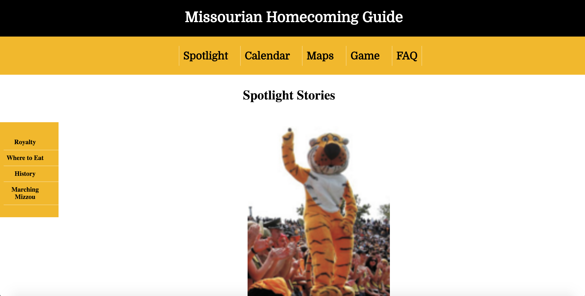
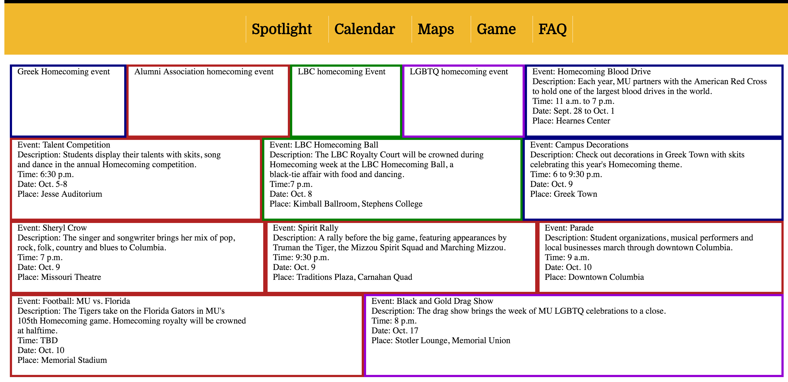
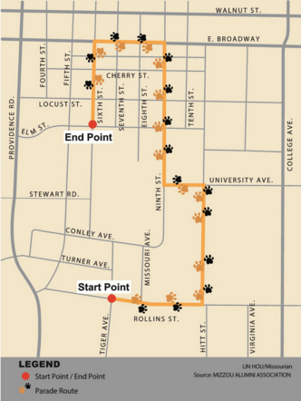

I chose to evaluate the Homecoming website and determined two reasonable tasks to perform before closely examining the site.
The first task was to find information about Homecoming royalty. It was not immediately obvious where to find this information because the home page did not mention royalty at all. I clicked on the FAQ menu link but that page was empty, so I then clicked on Spotlight, which I thought was an ambiguous menu item label. I noticed a small sub-menu mentioning royalty on the left of that page, but wasn't sure if that was supposed to take me to yet another page or if it would simply jump to an anchor on the Spotlight page. There was also one story listed on the Spotlight page as a Q&A with the previous year's Homecoming royalty winners.

In order to improve the efficiency of locating information about royalty, I would create a sub-menu under "Spotlight" (as well as rename that section to be more clear) to contain the royalty, history, etc., links. Even once I found the page, it was easy to miss the smaller menu floated on the left.
The second task was to find out when the Homecoming parade would be held. I clicked on the "Calendar" menu link because it seemed logical that Homecoming week events would be listed there. However, the page was quite confusing because of the numerous colors. I found the parade event box but realized I had to click on the "Maps" link to find a map of the parade route. I was disappointed that the map was not interactive because I would have liked to find where good parking options were.

I think the calendar idea was good in principle but I'm not sure there were enough event sponsors to justify using so many colors. After all, there were only nine events. I would understand needing to categorize them by sponsor if there were more than a dozen, perhaps, but it seemed like it would be easy to navigate them all without the colors. If colors were desired, I would set background colors (though the shades used would have to contrast enough to be accessible). Or, I would simply sort the calendar by date – which seems more useful to me.

In terms of the map, I think an interactive embedded Google Map would be a better option because it allows one to mark the parade route as well as create informational layers for things like parking, bathrooms, road closures, other activities, etc. At the very least, it would be beneficial to link the parade map to the calendar event, or combine them in some way, so the information would be easily accessible to readers.